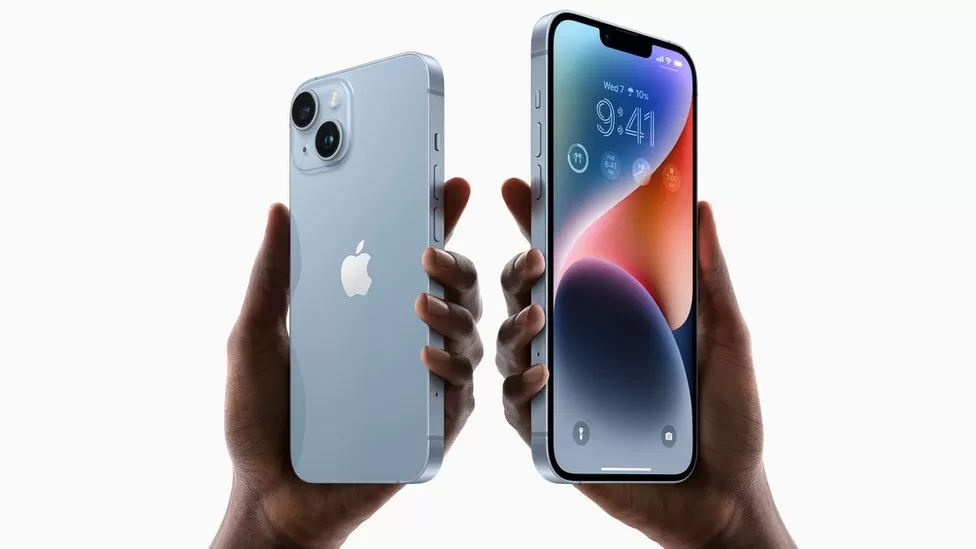
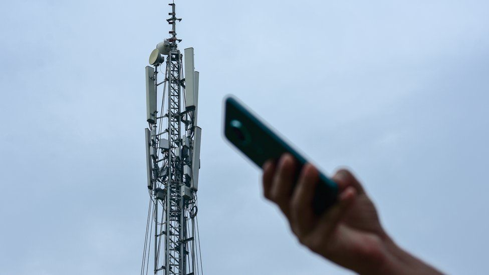

Apple has unveiled the iPhone 14, with emergency satellite connectivity and car crash detection technology, at a launch event in the US. The company revealed four versions of the new handset at its Cupertino headquarters, with an audience attending in person for the first time since the pandemic.
It also showed off a new extreme sports wearable - the Watch Ultra.
The event focused on next generation iPhone, Watch and AirPod products.
Apple CEO Tim Cook was on stage at the Steve Jobs theatre inside the tech giant's California campus - but the
presentation itself was entirely pre-recorded.

Changes to the law in April allow bigger, taller phone masts to be built without planning permission A council will force telecoms companies to go through a tougher planning process for more phone masts following local opposition. The government relaxed planning restrictions this year to speed up the rollout of 4G and 5G across England. It meant taller and broader masts could be installed without the need for council approval.
But West Berkshire Council has refused recent applications to avoid the full planning process in Newbury and Purley. The council argued the new masts would have a negative impact on the surrounding area, were the wrong colour and were a danger to road safety. Rejecting plans for one 20m high mast at the junction of Shaw Road and Kiln Road in Newbury, council planners said it would have a "detrimental impact" on the appearance of local conservation areas and nearby listed buildings. But some residents affected by the masts are not confident the council can stop the structures being erected.